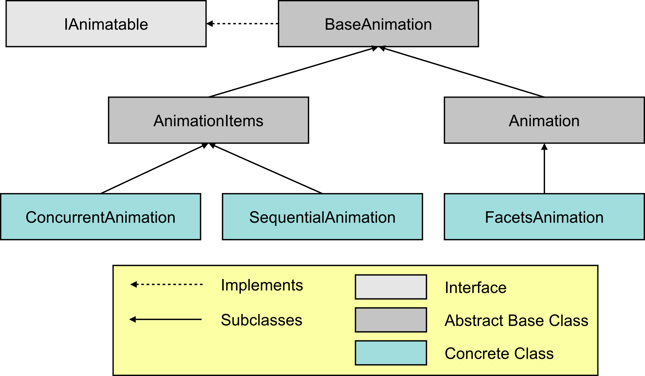

The core set of animation classes which actually perform animation of facet values are organized as shown below:
Each of these classes is defined in the facets.animation package:
| Class | Module |
|---|---|
| IAnimatable | facet.animation.i_animatable |
| BaseAnimation | facets.animation.base_animation |
| Animation | facets.animation.animation |
| FacetAnimation | facets.animation.facet_animation |
| AnimationItems | facets.animation.animation_items |
| ConcurrentAnimation | facets.animation.concurrent_animation |
| SequentialAnimation | facets.animation.sequential_animation |
The IAnimatable class defines an interface that all animation classes must implement. It consists of the following facet definitions:
BaseAnimation provides an implementation of the IAnimatable interface and serves as the base class for all other animation classes. It also adds the following two convenience methods:
The Animation class derives from BaseAnimation and provides an abstract base class for animating some kind of HasFacets object. Beyond the core facets implemented by BaseAnimation, it defines the following additional facets:
The Animation class also provides stub definitions for the following two facets which each concrete subclass should provide overriding implementations for:
Both the begin and end facets must have the same number of elements, which can either be a single value or an iterable.
The FacetAnimation class is a concrete subclass of Animation that allows any object facet to be animated and is the type of animation object created when using the animate_facet method of the HasFacets base class. It adds the following two facets:
AnimationItems is an abstract base class that extends BaseAnimation and is used to help define concrete subclassess, like ConcurrentAnimation and SequentialAnimation, that manage collections of animatable items. It defines a single new facet:
ConcurrentAnimation is a concrete subclass of AnimationItems that manages a collection of animation objects that all run concurrently. Its items facet defines the set of animation objects it manages.
When a ConcurrentAnimation object is started, all animations it manages are started. When the object is stopped, all its managed animations are also stopped. If left to run to completion, a ConcurrentAnimation object does not stop until all its managed component animations have all stopped.
The following code shows an example using ConcurrentAnimation:
class ComponentColor ( HasFacets ):
red = Range( 0, 255 )
green = Range( 0, 255 )
blue = Range( 0, 255 )
color = Property
@property_depends_on( 'red, green, blue' )
def _get_color ( self ):
return ((65536 * red) + (256 * green) + blue)
color = ComponentColor()
ca = ConcurrentAnimation( items = [
color.animate_facet( 'red', 5.0, 255, start = False ),
color.animate_facet( 'green', 6.0, 255, start = False ),
color.animate_facet( 'blue', 7.0, 255, start = False )
] )
ca.run()
In the example we create a ConcurrentAnimation object called ca to manage three separate animations for the red, green and blue facets of a ComponentColor object. We then start all three animations running by calling the run method on the ca object.
Note the use of the start = False argument to the animate_facet method. We do not want the FacetAnimation object it creates to be started immediately or managed by the animate_facet method. Instead we want the ConcurrentAnimation object we are creating to handle all of the animation management tasks for us.
If later some event happens that requires us to stop all of the animations early, we can do this as follows:
ca.halt()
If we want to know when all of the animations are complete, we could add the following code:
...
def animation_done ( ):
print 'The animation is complete!'
ca.on_facet_change( animation_done, 'stopped' )
Note that the animation_done function is called either when all of the animations end normally or are stopped early by calling ca.halt().
SequentialAnimation is a concrete subclass of AnimationItems that manages a collection of animation objects that run sequentially, one after the other. Its items facet defines the set of animation objects it manages.
When a SequentialAnimation object is started, the first animation in its items list is started. When that animation completes, the next animation in the list is started, and so on, until all animations in the list have run to completion. If a SequentialAnimation object is stopped, then whatever animation item in its items list is currently running is stopped. If left to run to completion, a SequentialAnimation object does not stop until the last of the animations in its items list has been run and stopped.
Note that if all you want to do is animate a sequence of changes on a single object facet, you can just use several calls to the animate_facet method instead, since the animate_facet method automatically runs a series of animation requests on the same facet in sequential order. You only need to create a SequentialAnimation object in cases where the animations to be run sequentially are on different objects or different facets of the same object.
The following code shows an example using SequentialAnimation for the same ComponentColor class from our previous ConcurrentAnimation example:
...
color = ComponentColor()
ca = SequentialAnimation( items = [
color.animate_facet( 'red', 5.0, 255, start = False ),
color.animate_facet( 'green', 6.0, 255, start = False ),
color.animate_facet( 'blue', 7.0, 255, start = False )
] )
ca.run()
The difference here is that now the green facet animation will not run until the red facet animation completes, and the blue facet animation will not run until the green facet animation completes. Other than that difference, all of the comments we made before about stopping the animation early or being notified when it completes are exactly the same.
It should probably go without saying that ConcurrentAnimation and SequentialAnimation objects can also be composed together. Thus you can write code such as:
sa = SequentialAnimation( items = [
ConcurrentAnimation( items = [ ... ] ),
ConcurrentAnimation( items = [ ... ] ),
...
] )
sa.run()
to create a series of animations that run sequentially, and where each item in the series is actually a group of animations that all run concurrently. In this case, none of the items in the second concurrent animation run until all of the items in the first concurrent animation have completed, and so on.